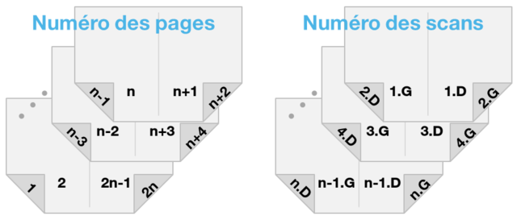

Remettre les pages d'un PDF dans l'ordre

Je viens de scanner un document imprimé en brochure/booklet après l’avoir dégrafé. C’est pratique, ça permet d’utiliser le chargeur automatique du scanner. Mais cela veut dire que sur chaque page scannée j’ai en réalité 2 pages, et dans un ordre assez bizarre: 8 et 9, 10 et 7, etc. Comment les remettre dans l’ordre ?
Numérologie
D’abord, on constate qu’avec 2 pages par scan, le nombre de pages est un multiple de 2. Écrivons-le 2n.
On a les pages 1 à n dans la première moitié de la brochure, et les pages n+1 à 2n dans la seconde moitié. Ce qui veut dire que sur la première page scannée, on a les pages n (à gauche) et n+1 (à droite).
Au verso, c’est-à-dire sur la deuxième page scannée, on a les pages n-1 et n+2. Et ainsi de suite jusqu’à la nième page scannée, la couverture, où l’on a les pages 1 et 2n.

À l’inverse, la page 1 est à droite du scan n, la page 2 à gauche du scan n-1, la page 3 à droite du scan n-2, … la page n à gauche du scan 1, la page n+1 à droite du scan 1, etc.
- Si k est compris entre 1 et n, la page k est sur le scan (n-k+1);
- Si k est supérieur à n, la page k est sur le scan (k-n);
- La page k est à droite si k est impair, à gauche si k est pair.
Mise en pratique
Vous aurez besoin d’avoir installé ImageMagick, Ghostscript (version 32 bits), et Cygwin si vous êtes sous Windows. Vous aurez également besoin des utilitaires pdfimages et jpegtran :
- pdfimages permet d’extraire les images du PDF sans les dégrader. Sous Ubuntu il est dans le package
poppler-utils; sous Windows il faut télécharger Xpdf puis copierpdfimages.exe(celui de bin64/ si l’OS le permet, de bin32/ sinon) dans le/usr/local/bin/de Cygwin. - jpegtran permet de faire pivoter une image JPEG sans la dégrader. Sous Ubuntu il est dans le package
libjpeg-turbo-progs; sous Windows il est téléchargeable ici, là encore le déposer sous/usr/local/bin/et s’assurer qu’il est exécutable.
Après ces préliminaires, si l’on a un doc.pdf de 8 scans (16 pages à la fin) :
On extrait les images du PDF :
Cela crée des fichiers$ pdfimages -j doc.pdf docdoc-0000.jpgàdoc-0007.jpg.On splitte chaque scan en 2 pages distinctes (
-rotate 90tourne la page de 90° avant de la couper en 2 ; le retirer si l’orientation est déjà bonne) :Cela remplace$ for i in doc-*.jpg; do convert -quality 95 -rotate 90 -crop 50%x0 "$i" "$i" && rm "$i";done
doc-0000.jpgpardoc-0000-0.jpg(page de gauche) etdoc-0000-1.jpg(page de droite), etc.Si une page est à l’envers (p.ex. dernière page d’une brochure au format paysage) on la retourne :
$ i=doc-0007-0.jpg; jpegtran -rotate 180 $i $i
Puis on génère la liste des scans à prendre pour remettre les pages dans l’ordre :
$ pages=`perl -e '$n=8; for $k (1..$n*2){printf "doc-%.4i-%i.jpg ", ($k>$n?$k-$n:$n-$k+1)-1, $k%2};'`; echo $pages doc-0007-1.jpg doc-0006-0.jpg doc-0005-1.jpg doc-0004-0.jpg doc-0003-1.jpg doc-0002-0.jpg doc-0001-1.jpg doc-0000-0.jpg doc-0000-1.jpg doc-0001-0.jpg doc-0002-1.jpg doc-0003-0.jpg doc-0004-1.jpg doc-0005-0.jpg doc-0006-1.jpg doc-0007-0.jpg
Enfin on construit le PDF final (
-density 300correspond à la résolution du scan, 300 dpi) et après vérification on fait le ménage :$ convert -density 300 -quality 80 $pages out.pdf $ rm *jpg